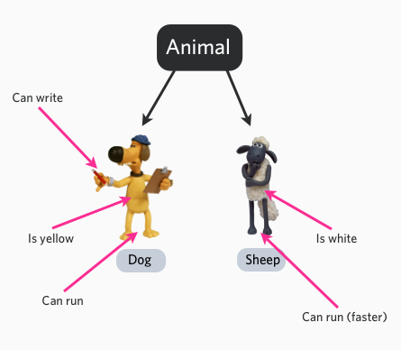
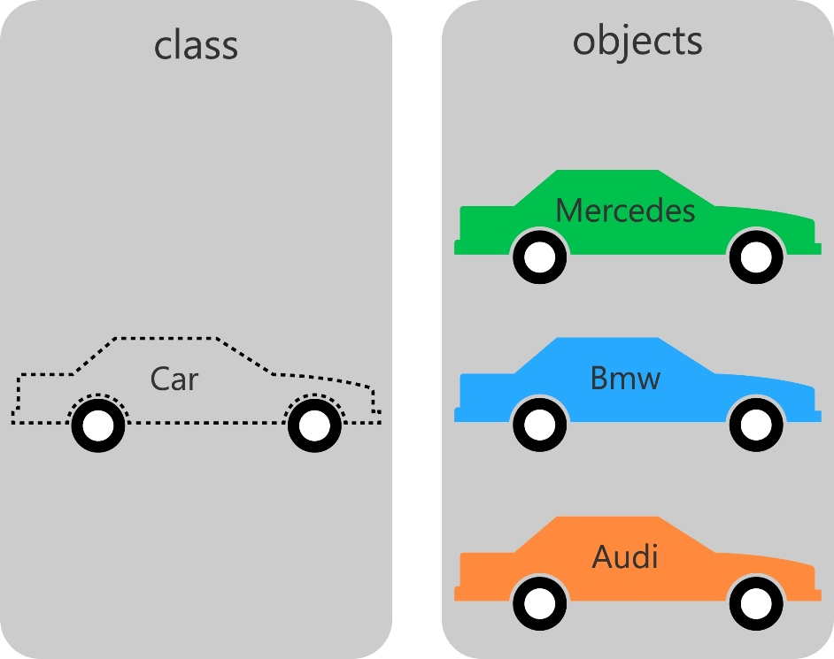

面向对象（Object-Oriented，简称 OO）是一种编程思想和方法，它将程序中的数据和操作数据的方法封装在一起，形成"对象"，并通过对象之间的交互和消息传递来完成程序的功能。面向对象编程强调数据的封装、继承、多态和动态绑定等特性，使得程序具有更好的可扩展性、可维护性和可重用性。
在面向对象的程序设计（英语：Object-oriented programming，缩写：OOP）中，对象是一个由信息及对信息进行处理的描述所组成的整体，是对现实世界的抽象。
在现实世界里我们所面对的事情都是对象，如计算机、电视机、自行车等。
对象的主要三个特性：
-
对象的行为：对象可以执行的操作，比如：开灯，关灯就是行为。
-
对象的形态：对对象不同的行为是如何响应的，比如：颜色，尺寸，外型。
-
对象的表示：对象的表示就相当于身份证，具体区分在相同的行为与状态下有什么不同。
比如 Animal(动物) 是一个抽象类，我们可以具体到一只狗跟一只羊，而狗跟羊就是具体的对象，他们有颜色属性，可以写，可以跑等行为状态。

面向对象编程的三个主要特性：
封装（Encapsulation）：指将对象的属性和方法封装在一起，使得外部无法直接访问和修改对象的内部状态。通过使用访问控制修饰符（public、private、protected）来限制属性和方法的访问权限，从而实现封装。
继承（Inheritance）：指可以创建一个新的类，该类继承了父类的属性和方法，并且可以添加自己的属性和方法。通过继承，可以避免重复编写相似的代码，并且可以实现代码的重用。
多态（Polymorphism）：指可以使用一个父类类型的变量来引用不同子类类型的对象，从而实现对不同对象的统一操作。多态可以使得代码更加灵活，具有更好的可扩展性和可维护性。在 PHP 中，多态可以通过实现接口（interface）和使用抽象类（abstract class）来实现。
面向对象内容
类 − 定义了一件事物的抽象特点。类的定义包含了数据的形式以及对数据的操作。
对象 − 是类的实例。
成员变量 − 定义在类内部的变量。该变量的值对外是不可见的，但是可以通过成员函数访问，在类被实例化为对象后，该变量即可成为对象的属性。
成员函数 − 定义在类的内部，可用于访问对象的数据。
继承 − 继承性是子类自动共享父类数据结构和方法的机制，这是类之间的一种关系。在定义和实现一个类的时候，可以在一个已经存在的类的基础之上来进行，把这个已经存在的类所定义的内容作为自己的内容，并加入若干新的内容。
父类 − 一个类被其他类继承，可将该类称为父类，或基类，或超类。
子类 − 一个类继承其他类称为子类，也可称为派生类。
多态 − 多态性是指相同的函数或方法可作用于多种类型的对象上并获得不同的结果。不同的对象，收到同一消息可以产生不同的结果，这种现象称为多态性。
重载 − 简单说，就是函数或者方法有同样的名称，但是参数列表不相同的情形，这样的同名不同参数的函数或者方法之间，互相称之为重载函数或者方法。
抽象性 − 抽象性是指将具有一致的数据结构（属性）和行为（操作）的对象抽象成类。一个类就是这样一种抽象，它反映了与应用有关的重要性质，而忽略其他一些无关内容。任何类的划分都是主观的，但必须与具体的应用有关。
封装 − 封装是指将现实世界中存在的某个客体的属性与行为绑定在一起，并放置在一个逻辑单元内。
构造函数 − 主要用来在创建对象时初始化对象， 即为对象成员变量赋初始值，总与new运算符一起使用在创建对象的语句中。
析构函数 − 析构函数(destructor) 与构造函数相反，当对象结束其生命周期时（例如对象所在的函数已调用完毕），系统自动执行析构函数。析构函数往往用来做"清理善后" 的工作（例如在建立对象时用new开辟了一片内存空间，应在退出前在析构函数中用delete释放）。
下图中我们通过 Car 类 创建了三个对象：Mercedes, Bmw, 和 Audi。
$mercedes = new Car ();
$bmw = new Car ();
$audi = new Car ();

PHP 类定义
PHP 定义类通常语法格式如下：
<?php
class phpClass {
var $var1;
var $var2 = "constant string";
function myfunc ($arg1, $arg2) {
[..]
}
[..]
}
?>
解析如下：
实例
<?php
class Site {
/* 成员变量 */
var $url;
var $title;
/* 成员函数 */
function setUrl($par){
$this->url = $par;
}
function getUrl(){
echo $this->url . PHP_EOL;
}
function setTitle($par){
$this->title = $par;
}
function getTitle(){
echo $this->title . PHP_EOL;
}
}
?>
变量 $this 代表自身的对象。
PHP_EOL 为换行符。
PHP 中创建对象
类创建后，我们可以使用 new 运算符来实例化该类的对象：
$runoob = new Site;
$taobao = new Site;
$google = new Site;
以上代码我们创建了三个对象，三个对象各自都是独立的，接下来我们来看看如何访问成员方法与成员变量。
调用成员方法
在实例化对象后，我们可以使用该对象调用成员方法，该对象的成员方法只能操作该对象的成员变量：
// 调用成员函数，设置标题和URL
$runoob->setTitle( "菜鸟教程" );
$taobao->setTitle( "淘宝" );
$google->setTitle( "Google 搜索" );
$runoob->setUrl( 'www.runoob.com' );
$taobao->setUrl( 'www.taobao.com' );
$google->setUrl( 'www.google.com' );
// 调用成员函数，获取标题和URL
$runoob->getTitle();
$taobao->getTitle();
$google->getTitle();
$runoob->getUrl();
$taobao->getUrl();
$google->getUrl();
完整代码如下：
实例
<?php
class Site {
/* 成员变量 */
var $url;
var $title;
/* 成员函数 */
function setUrl($par){
$this->url = $par;
}
function getUrl(){
echo $this->url . PHP_EOL;
}
function setTitle($par){
$this->title = $par;
}
function getTitle(){
echo $this->title . PHP_EOL;
}
}
$runoob = new Site;
$taobao = new Site;
$google = new Site;
// 调用成员函数，设置标题和URL
$runoob->setTitle( "菜鸟教程" );
$taobao->setTitle( "淘宝" );
$google->setTitle( "Google 搜索" );
$runoob->setUrl( 'www.runoob.com' );
$taobao->setUrl( 'www.taobao.com' );
$google->setUrl( 'www.google.com' );
// 调用成员函数，获取标题和URL
$runoob->getTitle();
$taobao->getTitle();
$google->getTitle();
$runoob->getUrl();
$taobao->getUrl();
$google->getUrl();
?>运行实例 »
执行以上代码，输出结果为：
菜鸟教程
淘宝
Google 搜索
www.runoob.com
www.taobao.com
www.google.com
PHP 构造函数
构造函数是一种特殊的方法。主要用来在创建对象时初始化对象， 即为对象成员变量赋初始值，在创建对象的语句中与 new 运算符一起使用。
PHP 5 允许开发者在一个类中定义一个方法作为构造函数，语法格式如下：
void __construct ([ mixed $args [, $... ]] )
在上面的例子中我们就可以通过构造方法来初始化 $url 和 $title 变量：
function __construct( $par1, $par2 ) {
$this->url = $par1;
$this->title = $par2;
}
现在我们就不需要再调用 setTitle 和 setUrl 方法了：
实例
$runoob = new Site('www.runoob.com', '菜鸟教程');
$taobao = new Site('www.taobao.com', '淘宝');
$google = new Site('www.google.com', 'Google 搜索');
// 调用成员函数，获取标题和URL
$runoob->getTitle();
$taobao->getTitle();
$google->getTitle();
$runoob->getUrl();
$taobao->getUrl();
$google->getUrl();
运行实例 »
析构函数
析构函数(destructor) 与构造函数相反，当对象结束其生命周期时（例如对象所在的函数已调用完毕），系统自动执行析构函数。
PHP 5 引入了析构函数的概念，这类似于其它面向对象的语言，其语法格式如下：
void __destruct ( void )
实例
<?php
class MyDestructableClass {
function __construct() {
print "构造函数\n";
$this->name = "MyDestructableClass";
}
function __destruct() {
print "销毁 " . $this->name . "\n";
}
}
$obj = new MyDestructableClass();
?>
执行以上代码，输出结果为：
构造函数
销毁 MyDestructableClass
继承
PHP 使用关键字 extends 来继承一个类，PHP 不支持多继承，格式如下：
class Child extends Parent {
// 代码部分
}
实例
实例中 Child_Site 类继承了 Site 类，并扩展了功能：
<?php
// 子类扩展站点类别
class Child_Site extends Site {
var $category;
function setCate($par){
$this->category = $par;
}
function getCate(){
echo $this->category . PHP_EOL;
}
}
方法重写
如果从父类继承的方法不能满足子类的需求，可以对其进行改写，这个过程叫方法的覆盖（override），也称为方法的重写。
实例中重写了 getUrl 与 getTitle 方法：
function getUrl() {
echo $this->url . PHP_EOL;
return $this->url;
}
function getTitle(){
echo $this->title . PHP_EOL;
return $this->title;
}
访问控制
PHP 对属性或方法的访问控制，是通过在前面添加关键字 public（公有），protected（受保护）或 private（私有）来实现的。
- public（公有）：公有的类成员可以在任何地方被访问。
- protected（受保护）：受保护的类成员则可以被其自身以及其子类和父类访问。
- private（私有）：私有的类成员则只能被其定义所在的类访问。
属性的访问控制
类属性必须定义为公有，受保护，私有之一。如果用 var 定义，则被视为公有。
<?php
/**
* Define MyClass
*/
class MyClass
{
public $public = 'Public';
protected $protected = 'Protected';
private $private = 'Private';
function printHello()
{
echo $this->public;
echo $this->protected;
echo $this->private;
}
}
$obj = new MyClass();
echo $obj->public; // 这行能被正常执行
echo $obj->protected; // 这行会产生一个致命错误
echo $obj->private; // 这行也会产生一个致命错误
$obj->printHello(); // 输出 Public、Protected 和 Private
/**
* Define MyClass2
*/
class MyClass2 extends MyClass
{
// 可以对 public 和 protected 进行重定义，但 private 而不能
protected $protected = 'Protected2';
function printHello()
{
echo $this->public;
echo $this->protected;
echo $this->private;
}
}
$obj2 = new MyClass2();
echo $obj2->public; // 这行能被正常执行
echo $obj2->private; // 未定义 private
echo $obj2->protected; // 这行会产生一个致命错误
$obj2->printHello(); // 输出 Public、Protected2 和 Undefined
?>
方法的访问控制
类中的方法可以被定义为公有，私有或受保护。如果没有设置这些关键字，则该方法默认为公有。
<?php
/**
* Define MyClass
*/
class MyClass
{
// 声明一个公有的构造函数
public function __construct() { }
// 声明一个公有的方法
public function MyPublic() { }
// 声明一个受保护的方法
protected function MyProtected() { }
// 声明一个私有的方法
private function MyPrivate() { }
// 此方法为公有
function Foo()
{
$this->MyPublic();
$this->MyProtected();
$this->MyPrivate();
}
}
$myclass = new MyClass;
$myclass->MyPublic(); // 这行能被正常执行
$myclass->MyProtected(); // 这行会产生一个致命错误
$myclass->MyPrivate(); // 这行会产生一个致命错误
$myclass->Foo(); // 公有，受保护，私有都可以执行
/**
* Define MyClass2
*/
class MyClass2 extends MyClass
{
// 此方法为公有
function Foo2()
{
$this->MyPublic();
$this->MyProtected();
$this->MyPrivate(); // 这行会产生一个致命错误
}
}
$myclass2 = new MyClass2;
$myclass2->MyPublic(); // 这行能被正常执行
$myclass2->Foo2(); // 公有的和受保护的都可执行，但私有的不行
class Bar
{
public function test() {
$this->testPrivate();
$this->testPublic();
}
public function testPublic() {
echo "Bar::testPublic\n";
}
private function testPrivate() {
echo "Bar::testPrivate\n";
}
}
class Foo extends Bar
{
public function testPublic() {
echo "Foo::testPublic\n";
}
private function testPrivate() {
echo "Foo::testPrivate\n";
}
}
$myFoo = new foo();
$myFoo->test(); // Bar::testPrivate
// Foo::testPublic
?>
接口
使用接口（interface），可以指定某个类必须实现哪些方法，但不需要定义这些方法的具体内容。
接口是通过 interface 关键字来定义的，就像定义一个标准的类一样，但其中定义所有的方法都是空的。
接口中定义的所有方法都必须是公有，这是接口的特性。
要实现一个接口，使用 implements 操作符。类中必须实现接口中定义的所有方法，否则会报一个致命错误。类可以实现多个接口，用逗号来分隔多个接口的名称。
<?php
// 声明一个'iTemplate'接口
interface iTemplate
{
public function setVariable($name, $var);
public function getHtml($template);
}
// 实现接口
class Template implements iTemplate
{
private $vars = array();
public function setVariable($name, $var)
{
$this->vars[$name] = $var;
}
public function getHtml($template)
{
foreach($this->vars as $name => $value) {
$template = str_replace('{' . $name . '}', $value, $template);
}
return $template;
}
}
常量
可以把在类中始终保持不变的值定义为常量。在定义和使用常量的时候不需要使用 $ 符号。
常量的值必须是一个定值，不能是变量，类属性，数学运算的结果或函数调用。
自 PHP 5.3.0 起，可以用一个变量来动态调用类。但该变量的值不能为关键字（如 self，parent 或 static）。
实例
<?php
class MyClass
{
const constant = '常量值';
function showConstant() {
echo self::constant . PHP_EOL;
}
}
echo MyClass::constant . PHP_EOL;
$classname = "MyClass";
echo $classname::constant . PHP_EOL; // 自 5.3.0 起
$class = new MyClass();
$class->showConstant();
echo $class::constant . PHP_EOL; // 自 PHP 5.3.0 起
?>
抽象类
任何一个类，如果它里面至少有一个方法是被声明为抽象的，那么这个类就必须被声明为抽象的。
定义为抽象的类不能被实例化。
被定义为抽象的方法只是声明了其调用方式（参数），不能定义其具体的功能实现。
继承一个抽象类的时候，子类必须定义父类中的所有抽象方法；另外，这些方法的访问控制必须和父类中一样（或者更为宽松）。例如某个抽象方法被声明为受保护的，那么子类中实现的方法就应该声明为受保护的或者公有的，而不能定义为私有的。
<?php
abstract class AbstractClass
{
// 强制要求子类定义这些方法
abstract protected function getValue();
abstract protected function prefixValue($prefix);
// 普通方法（非抽象方法）
public function printOut() {
print $this->getValue() . PHP_EOL;
}
}
class ConcreteClass1 extends AbstractClass
{
protected function getValue() {
return "ConcreteClass1";
}
public function prefixValue($prefix) {
return "{$prefix}ConcreteClass1";
}
}
class ConcreteClass2 extends AbstractClass
{
public function getValue() {
return "ConcreteClass2";
}
public function prefixValue($prefix) {
return "{$prefix}ConcreteClass2";
}
}
$class1 = new ConcreteClass1;
$class1->printOut();
echo $class1->prefixValue('FOO_') . PHP_EOL;
$class2 = new ConcreteClass2;
$class2->printOut();
echo $class2->prefixValue('FOO_') . PHP_EOL;
?>
执行以上代码，输出结果为：
ConcreteClass1
FOO_ConcreteClass1
ConcreteClass2
FOO_ConcreteClass2
此外，子类方法可以包含父类抽象方法中不存在的可选参数。
例如，子类定义了一个可选参数，而父类抽象方法的声明里没有，则也是可以正常运行的。
<?php
abstract class AbstractClass
{
// 我们的抽象方法仅需要定义需要的参数
abstract protected function prefixName($name);
}
class ConcreteClass extends AbstractClass
{
// 我们的子类可以定义父类签名中不存在的可选参数
public function prefixName($name, $separator = ".") {
if ($name == "Pacman") {
$prefix = "Mr";
} elseif ($name == "Pacwoman") {
$prefix = "Mrs";
} else {
$prefix = "";
}
return "{$prefix}{$separator} {$name}";
}
}
$class = new ConcreteClass;
echo $class->prefixName("Pacman"), "\n";
echo $class->prefixName("Pacwoman"), "\n";
?>
输出结果为：
Mr. Pacman
Mrs. Pacwoman
Static 关键字
声明类属性或方法为 static(静态)，就可以不实例化类而直接访问。
静态属性不能通过一个类已实例化的对象来访问（但静态方法可以）。
由于静态方法不需要通过对象即可调用，所以伪变量 $this 在静态方法中不可用。
静态属性不可以由对象通过 -> 操作符来访问。
自 PHP 5.3.0 起，可以用一个变量来动态调用类。但该变量的值不能为关键字 self，parent 或 static。
<?php
class Foo {
public static $my_static = 'foo';
public function staticValue() {
return self::$my_static;
}
}
print Foo::$my_static . PHP_EOL;
$foo = new Foo();
print $foo->staticValue() . PHP_EOL;
?>
执行以上程序，输出结果为：
foo
foo
Final 关键字
PHP 5 新增了一个 final 关键字。如果父类中的方法被声明为 final，则子类无法覆盖该方法。如果一个类被声明为 final，则不能被继承。
以下代码执行会报错：
<?php
class BaseClass {
public function test() {
echo "BaseClass::test() called" . PHP_EOL;
}
final public function moreTesting() {
echo "BaseClass::moreTesting() called" . PHP_EOL;
}
}
class ChildClass extends BaseClass {
public function moreTesting() {
echo "ChildClass::moreTesting() called" . PHP_EOL;
}
}
// 报错信息 Fatal error: Cannot override final method BaseClass::moreTesting()
?>
调用父类构造方法
PHP 不会在子类的构造方法中自动的调用父类的构造方法。要执行父类的构造方法，需要在子类的构造方法中调用 parent::__construct() 。
<?php
class BaseClass {
function __construct() {
print "BaseClass 类中构造方法" . PHP_EOL;
}
}
class SubClass extends BaseClass {
function __construct() {
parent::__construct(); // 子类构造方法不能自动调用父类的构造方法
print "SubClass 类中构造方法" . PHP_EOL;
}
}
class OtherSubClass extends BaseClass {
// 继承 BaseClass 的构造方法
}
// 调用 BaseClass 构造方法
$obj = new BaseClass();
// 调用 BaseClass、SubClass 构造方法
$obj = new SubClass();
// 调用 BaseClass 构造方法
$obj = new OtherSubClass();
?>
执行以上程序，输出结果为：
BaseClass 类中构造方法
BaseClass 类中构造方法
SubClass 类中构造方法
BaseClass 类中构造方法

 时间戳是一个字符序列，表示一定的事件发生的日期/时间。
时间戳是一个字符序列，表示一定的事件发生的日期/时间。